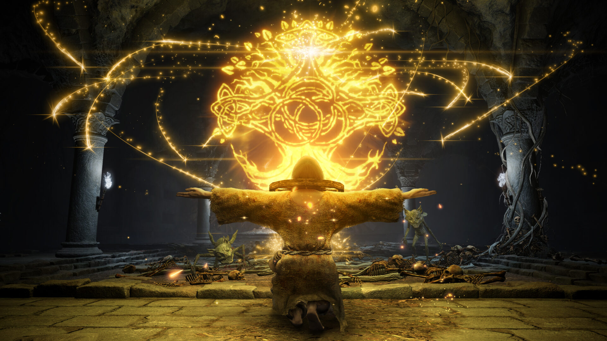
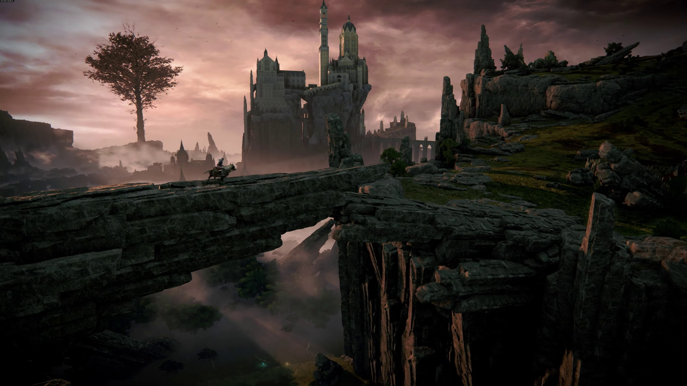
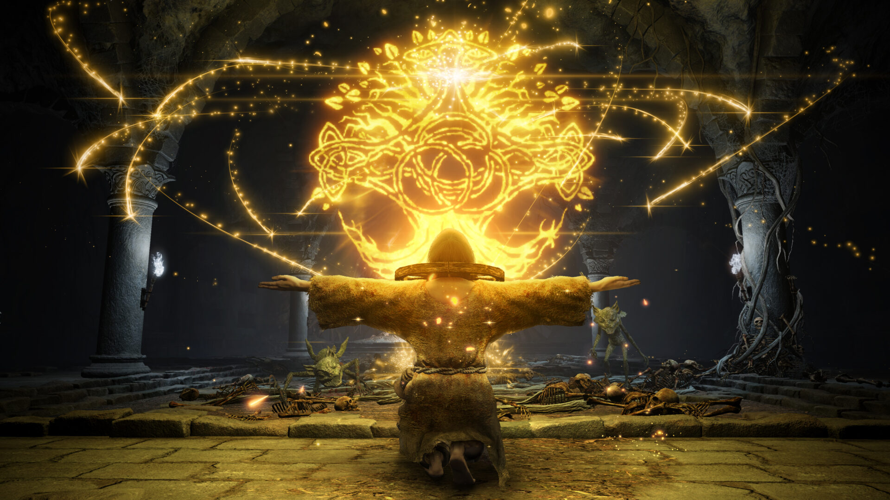
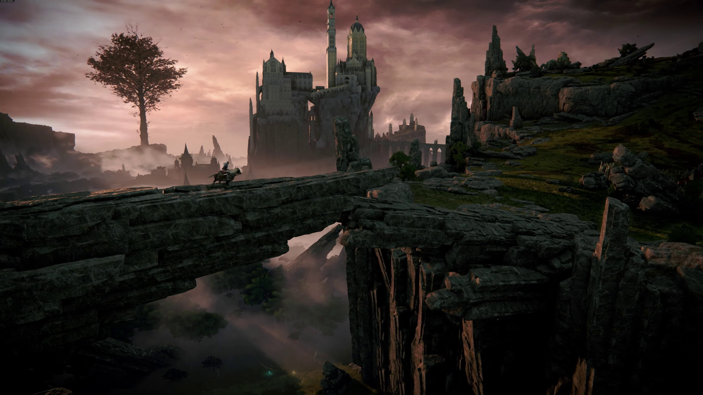

Welcome to the official website for Elden Ring
Elden Ring is an action role-playing game developed by FromSoftware and published by Bandai Namco Entertainment. The game is set in a world of decaying deities and their descendants, who seek to reclaim their former power. Players take control of a custom character and progress through the game by exploring environments, defeating enemies, and leveling up their character.
Create Your Own Character
In Elden Ring, players can create their own character and choose their appearance, starting stats, and starting class. As the player progresses through the game, they can level up their character and allocate skill points to unlock new abilities and passive effects.
Explore the World of Elden Ring
The world of Elden Ring is filled with mysterious and dangerous locations to explore. From ancient ruins to dark forests, each area is filled with secrets and challenges for players to uncover. As players explore the world, they will encounter various enemies and bosses, each with their own unique abilities and tactics.
Experience Intense Combat
Elden Ring features fast-paced combat that requires players to constantly adapt to new situations. Players can choose from a variety of weapons and spells, each with their own unique playstyle. The game also features a stamina system that limits the player's actions, adding a layer of strategy to the combat.
 


